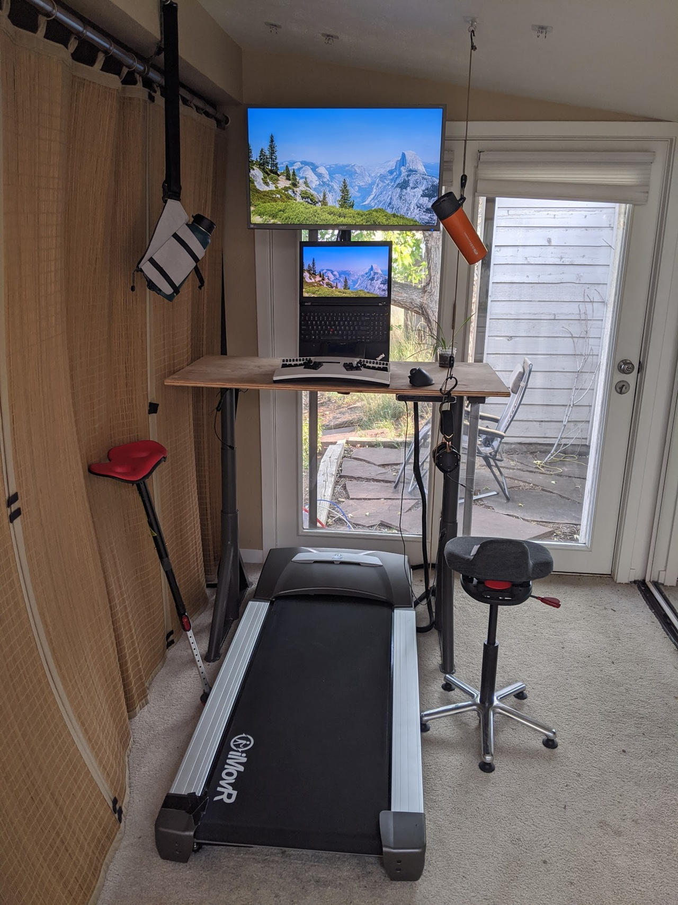
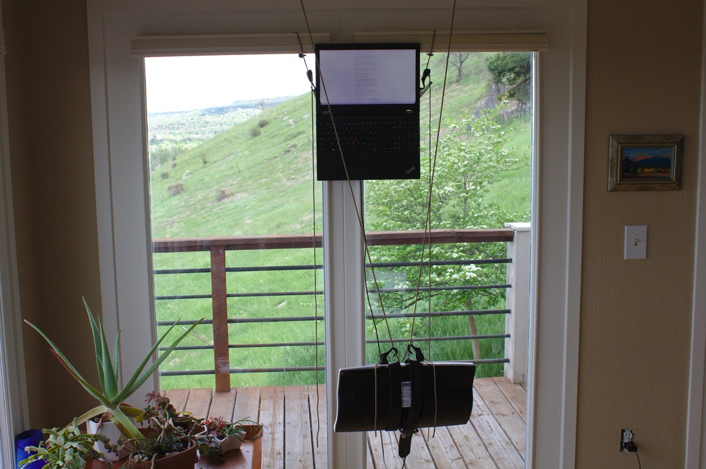
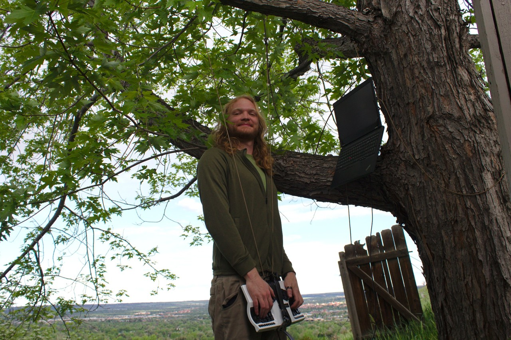

Ergonomics Log
This is a place for me to put miscellaneous updates about my computer setups, in reverse chronological order. You might also be interested in my instagram account for related pictures.
2020-09-12 – standing desk + treadmill!
Quite a lot has changed in the last few months. I'd have preferred to do more incremental updates, but instead will just batch the progress all into one big update.
Old walking treadmill broke -> new treadmill acquired!
My cheap GoPlus Treadmill$ broke after only a bit more than a hundred miles, so I bought a used IMovr ThermoTread GT$ on Craigslist, with about 300 miles on it and in pristine condition. Since it's in such good condition and the summer has been hot here in Colorado, so far it has lived indoors. I've been loving it so far1, a much less constrained walking area and much smoother than the cheap treadmill.
New sit-stand desk and active sitting stool
My employer kindly purchased equipment for working from home. While I contemplated figuring out some weird ergonomic stuff to get, unfortunately most of the eccentric options I was interested in, like the Varier Gravity Balans or the Humanscale Float desk all fell outside the bounds of both budget and reasonableness. So, instead, I ended up with the following setup:

An electrically actuated sit/stand desk, Ikea Idasen Sit/Stand Underframe.
I chose this desk because it has a reputation for being very stable even when fully extended, likely partially due to the leg design. This is particularly important for treadmilling, because the desk will be quite high when properly positioned, and the action of walking can tend to create little impulses through the floor and through your palms, which can cause some wobble.
I also read that Linak actuators and electronics are quite nice, perhaps superior to the Jiecang actuators found in many popular desks (Uplift, Jarvis, Evodesk, Geekdesk, etc).
One thing I particularly like about the Linak electronics is that it supports bluetooth. While the phone control is fairly lobotomized – it requires you to keep pressing on the phone to continue movement – it turns out there is a very handy idasen-controller script which allows computer control! So now I can get my desk to move to preset heights via keyboard shortcuts. This makes me disproportionately happy :)
I got just the underframe, with the intention of putting a very nice piece of wood on the top. However, I wanted to have a functioning desk quickly after picking up the underframe, and so I got a $30 piece of 4'x2' birch plywood from Home Depot. My woodworking friends tell me the edges could really use some improvements, and maybe finishing it would be good, or adding some birch edge tape, but I am pretty happy with it for now. I think the bare wood looks decent, and since it is was inexpensive I am not as concerned about drilling into it, spills, etc.
QOR360 "Ariel" active office chair, which I enjoy a lot so far. It forces you to use core stabilization to make sitting a bit more active, which prevents slouching. It is possible tilt your pelvis all the way back and round your back a bunch in terrible posture, so it does not entirely prevent bad posture. However, that posture is so extreme that it immediately feels ridiculous and so it is impossible for me to linger in it unaware.
VIVO desk mount stand$ to raise the screen to a nice height. I got a relatively inexpensive stand instead of a fancy adjustable arm for the following reasons:
The relative height I desire between the keyboard and screen is fairly constant between postures, since I am always upright.
Most monitor arms can't elevate the center of the screen to 30" above the desk surface, but that's where I want it for my proportions.
When fully elevated, standing desks can be a bit wobbly, and an articulated monitor arm can amplify this wobble. To me this is mainly a concern when walking on the treadmill, as impulses can travel through the floor or through my palms (although, putting much pressure through the palms should really be avoided!).
A variety of postures
This setup supports a variety of postures!
Walking / standing:

Leaning / active sitting:
One very nice thing about the QOR360 chair is that there is an option to not have caster feet, and the base fits perfectly within the width of the treadmill belt, so I can put it directly on top. Similarly, the Focal Mogo Stool$ I use for leaning can be used right on top of the treadmill, so I never need to move the treadmill.
Drink suspension
You might have noticed something a little strange going on in this picture – there's a mug suspended on the right and a water bottle on the left! The idea is that if your drink is suspended by a rope, accidentally bumping it usually never spills it. It also frees up some desk space!
On the right, as usual for suspending lightweight things indoors, I am using adjustable tie-downs$ with adhesive hangers$. The adjustable part of the tie-down can then hook directly around the loop built into my combo coffee mug / french press$. It's made by GSI Outdoors, and so is intended for camping and such, but I use it almost every day. I like the convenience of just having one thing to clean, and the built in suspension loop is great for this purpose.
On the left, I am using a ChicoBag Bottle Sling$. I particularly got this because it fits 2 liter bottles, which I use for homemade seltzer water. It also nicely fits my 40oz Hydro Flask$.
Desk cable organization
I put in a silly amount of time organizing the cables. Here's what it looked like before:
What a mess! Here are some pics after organizing:
Granted, no longer having the speakers on the desk reduced the number of cables a bit. The "before" pictures were taken a few months ago, as it took me a while to get around to putting up this update.
And here are some pics of the underside, in case you were curious:
Here's the stuff involved:
After looking around at different cable management ideas, I came across the idea of using finger ducts, which let you stuff the cables in the box, and have them enter / exit at any of the slots. Most of them are plastic, though, and I wanted something more solid, that screwed into the desk. Happily, I found some metal 19 inch 1U server rack finger ducts$ which ended up fitting quite nicely for this application.
Screw-in cable tie bases$. Many of the cable tie bases out there are adhesive, but I wanted something more solid, so got ones that screw in. I thought I'd use a bunch of these, but I only ended up using one, to hold some charging cables.
Braided cable sleeve$ to tidy up the monitor cables / power cables.
Electriduct power strip$ provides three plugs and two USB power ports. It's fairly decent, I got it because it can be screwed into the bottom of the desk, with the outlets facing horizontally.
CalDigit USB-C Pro Dock$, this was a bit of a splurge, but it's very well built and works great (and with Linux!). I particularly got it because it supports 85W of charging, whereas many hubs limit the rate of charge. I also liked the future-proofing of it being thunderbolt, though, admittedly, a plain old USB-C dock would be sufficient for my usage. I used one packet of Sugru$ to affix it to the bottom of the desk.
2020-05-25 – suspending keyboard from ceiling!
Today I was doing some standing computing (as described in the standing keyboard section of the deskless wfh post), when I realized I wanted to be able to take quick inversion breaks (handstands, headstands). Doing these inversions is impeded because I needed to detach my keyboard. Two solutions occurred to me:
Use straps + buckle to allow for quick attachment / detachment.
Also suspend the keyboard, so I can just walk up to it and start using it. Since the materials for this were readily at hand, I gave this option a shot! It took less than 5 minutes to set this up, which is a pretty great turnaround from idea to implementation.
Here's the initial implementation, using the same adjustable tie-downs and adhesive hooks described in the "Laptop Ceiling Suspension" post:

Here are some closeups on how it's attached:

The same can be done suspending it from branches / even twigs, just using the adjustable tie-downs$:

Roughly what it looks like in use:

So far I'm liking this a lot! I think there are still some advantages over a stationary mount, because the keyboard still has some movement freedom – I can move side to side / turn a bit. This movement freedom is not quite as much as suspension from pants, but there is the notable benefit that I can immediately walk away from the computer without having a keyboard attached to me!
2020-05-16 – "Polarizer Glasses" post
Synopsis: I built some variable angle polarizer glasses based on camera optics!
2020-05-02 – "Laptop Ceiling Suspension" post
Synopsis: Using adhesive hangers and adjustable tie-downs to suspend laptops.
2020-04-25 – hammock under the deck!
I found a rather nice spot under the deck for my Dutchware Chameleon backpacking hammock:
You might notice that there are some hooks hanging down. These are for suspending my laptop screen above my head, for ergonomic supine computing! These hooks are adjustable tie-downs$, attached via adhesive hangers$. The nice thing about these adhesive hangers is that they can be removed without damaging the surface.
So, this is very similar to the approach of suspending from zip-ties / wire as described in the "Laptop Ceiling Suspension" post. However, this was relatively unstable because the front of the body ended up resting on the ridgeline. I discovered that putting the hooks through the zip ties and hooking to the ridgeline added some nice stabilization:
I realize it might be hard to visualize how this works. Perhaps I will post some pictures of this hammock setup in use at some point. For now, here's a picture from the "Tree based Computing" post:

2020-03-25 – "Deskless Ergonomic Work-From-Home Setups" post
Synopsis: A few different ideas for comfortably working from home, without a desk.
2020-03-25 – "Tree Based Computing" post
Synopsis: A portable and ergonomic way to use your computer in nature.
2019-12-18 – "Supine Computing" post
Synopsis: Comfortable computer use while laying down, dealing with back pain. Hammocks!
2019-12-08 – "Outdoor Computing with a Deck Desk" post
Synopsis: Experiments in outdoor computing, deck desking, and reclined computing.
2018-10-01 – "Computing comfortably at 30,000 feet" post
Synopsis: How to use a laptop on an airline flight with decent ergonomics.
Footnotes
I knew I would love the IMovr, since I also had one in my setup back in Washington (as featured in the image at the beginning of the "Outdoor Computing with a Deck Desk" post). I actually wanted to get a different brand of treadmill, perhaps one from LifeSpan, purely for the purpose of comparison. However, there weren't any good used options, so I went with the reliably good (though expensive!) option of the IMovr.↩︎
Some links are amazon affiliate links, which sometimes send me a bit of money when you make purchases after clicking them. The purpose of this blog is sharing information and ideas, not making money. But I figure I may as well add them, and I appreciate usage of them!